Structure as required: README.md, .gitignore (ignores .env, *.pkl, *.csv, mage.log, __pycache__/ and .venv/), requirements.txt, elt/, iris_project/, stream/, tests/test_prepare_data.py, .github/workflows/ci.yml. Output of git log --oneline:
{{GITLOG}}
| Command | Where the change happens | What exactly happens? |
|---|---|---|
git init | working folder / local repository | Creates the hidden .git folder, making the folder an empty local repository. |
git add train.py | working folder -> staging area | Marks the current content of train.py to be part of the next commit. |
git commit -m "msg" | staging area -> local repository | Saves the staged snapshot as a commit with the message "msg", only on my laptop. |
git remote add origin URL | local repository (settings only) | Stores the short name origin for the GitHub URL; nothing is transferred. |
git push -u origin main | local repository -> remote (GitHub) | Uploads my local main commits and links it to origin/main so a later plain git push works. |
git pull origin main | remote -> local repository and working folder | Downloads new commits from origin/main and merges them into my branch and files. |
After git commit, can a teammate see the code on GitHub? No. A commit exists only in my local repository; GitHub receives it only after git push.
tests/test_prepare_data.py asserts 120 train and 30 test rows from prepare_data.transform (train_test_split(test_size=0.2, random_state=42)). .github/workflows/ci.yml runs on every push: checkout, Python 3.12, pip install -r requirements.txt, python -m pytest. Runs: CI #1 green (6d86300); CI #2 red with test_size=0.3 (b038cf1; locally 105 == 120 failed); fix 0c83c3e gave CI #3 green. Screenshots: appendix A3. The workflow run for the final submission commit a1af458 (CI #6) was also green; this was checked in the GitHub Actions tab (no screenshot of that run is included).
Notebook elt/freshcart_elt.ipynb; SQL in elt/sql/; code in elt/freshcart.py; mock data in elt/mock_data.py (the course sample data; no real APIs). Database FRESHCART_DB; the final notebook was executed once, top to bottom, in FRESHCART_FINAL.
| Check | Expected | Actual |
|---|---|---|
| Raw order rows in bronze | 8 (6 web + 2 mobile) | 8 |
| Rows passing cleaning | 6 | 6 |
| Quarantine | 2 (ORD-1004, ORD-1006) | 2 (same orders) |
| After deduplication | 4 | 4 |
| Gold line | 4 orders, 7,785.00, 126 points | 4 orders, 7785.00, 126 points |
| Rows rejected | 25% | 25% |
ORD-1003. (1) In bronze.orders_raw the web copy (ingest_seq 2) is flat JSON with order_id, cust_email, amount: null, updated_at 09:10; the mobile copy (ingest_seq 8) is nested camelCase JSON with orderId, customer.email, total.value "2,100.00", updatedAt 18:40. They differ because they come from two different APIs; bronze keeps each as received. (2) In 10_orders_clean.sql the unified CTE maps both shapes to the same columns, and the typed CTE applies LOWER(TRIM(email)), INITCAP for the name, COALESCE(TRY_TO_DATE(..'YYYY-MM-DD'), ..'DD/MM/YYYY', ..'MON DD, YYYY') (the mobile 02/09/2026 becomes 2026-09-02), TRY_TO_DECIMAL(REGEXP_REPLACE(amount,'[^0-9.-]',''),12,2) ("2,100.00" becomes 2100.00) and TRY_TO_TIMESTAMP_NTZ. (3) 20_orders_dedup.sql: QUALIFY ROW_NUMBER() OVER (PARTITION BY order_id ORDER BY updated_at DESC, ingest_seq DESC) = 1 ranks copies newest first, so the mobile copy (18:40, later than 09:10) survives with amount 2100.00. (4) Gold: INR rate 1.0, amount_inr = ROUND(2100.00 x 1.0, 2) = 2100.00; Meera is Platinum (multiplier 3), loyalty_points = FLOOR(2100.00/100) x 3 = 21 x 3 = 63.
ORD-1005 vs ORD-1001 (Priya). The tier is taken on the order date: LEFT JOIN dim.customers_scd2 c ON c.email = o.email AND o.order_date BETWEEN c.valid_from AND c.valid_to, then ref.tier_multiplier. Priya is Silver until 2026-09-02 and Gold from 2026-09-03. ORD-1001 (09-01): Silver x1, FLOOR(1250/100) = 12 points. ORD-1005 (09-03): Gold x2, FLOOR(899/100) x 2 = 16 points.
unsupported_currencyAdded in 10_orders_clean.sql inside ARRAY_CONSTRUCT_COMPACT: IFF(currency IS NULL OR currency NOT IN ('INR','USD'), 'unsupported_currency', NULL). ORD-1006 (EUR) reasons before: ["bad_email","bad_pincode"]; after the re-run (in silver.orders_checked): ["bad_email","bad_pincode","unsupported_currency"]. Gold does not change (4 / 7,785.00 / 126): ORD-1006 was already rejected, so it never reached gold. No second quarantine row: the NOT EXISTS (... same source, order_id and updated_at ...) in the quarantine insert skips a record already there (and ignores the reasons, so the old row keeps the old reasons); QUALIFY ROW_NUMBER() removes copies within one run.
Predictions were written and committed (72e290d) before the run; the actuals match all five.
| Quantity | Prediction | Actual |
|---|---|---|
CUST-02 rows in dim.customers_scd2 | 2 | 2 (Silver to 2026-08-14, Gold from 2026-08-15) |
| Tier used for ORD-1002 | Gold | Gold |
| Loyalty points for ORD-1002 | 70 | 70 (FLOOR(3536/100) x 2) |
| Total points in gold | 161 | 161 |
Gold rows whose published_at changed | 1 | 1 (ORD-1002 only) |
A second pass of the transformation changed no published_at and no row_hash. Why gold is safe to re-run: each run rebuilds silver.orders_enriched and MERGEs it into gold on order_id. The row_hash is a HASH of every column except order_id (order date, customer, email, tier, multiplier, amount, currency, FX rate, INR amount, points, high-value flag, city, state, region, updated_at); the MERGE updates a row (and refreshes published_at) only when the hash differs, and inserts only new orders, so a re-run never creates a duplicate and never touches an unchanged row. Bronze still grows by 8 rows per run because every run extracts the same 8 raw orders again into new landing files and COPY INTO appends them; bronze is an append-only record, and the duplicates are removed later in silver.
Added to quality_checks(): SELECT COUNT_IF(order_date > CURRENT_DATE()) FROM silver.orders_dedup ("orders dated in the future"; 0 on real data). Failing on purpose with the marked order TEST-B5-FUTURE-DATE-001 (date 2026-12-31, no amount so that no other check fires) printed orders dated in the future 1 PROBLEM. Cleanup first counted the exact markers and asserted them (bronze 1, gold 1, quarantine 0, staged file 1, other rows untouched), then deleted exactly those; the transform was re-run, the check returned to 0 OK, and the state was identical to the baseline taken before (19 of 19 checks).
Why ELT suits FreshCart. FreshCart's sources send messy data in different shapes (flat web JSON, nested mobile JSON, duplicates, bad emails). It is better to land everything unchanged in bronze and clean it with SQL inside Snowflake: the raw copy is kept, so a changed rule or a late fix is a re-run of the SQL (B3 and B4 needed no re-extraction), bad rows go to quarantine with reasons instead of being lost, and the warehouse does the heavy work. When ETL still wins. The course notes ("Data transformation and orchestration", 30-09-2026, section "ETL and ELT: where the transformation runs") say ETL is the better fit for strict pre-load compliance, small or costly targets and heavy non-SQL processing, and stress the sensitive-data case: ETL can mask or drop personal data (for example hash an Aadhaar number or drop a card number) before it ever lands, whereas in ELT the raw personal data lands in bronze and needs masking policies and access control from day one. So if a raw feed carried such fields, they would have to be masked before the load.
load_iris (data_loader, @test: 150 rows, target)
-> validate_data (transformer, C4, @test x2: no missing values, 3 classes)
-> prepare_data (transformer, @test: split column)
-> train_model (transformer, @test: accuracy >= 0.90, 30 test rows)
|-> save_results (data_exporter, @test: CSV with 30 rows)
'-> evaluate_model (transformer, C3, @test: 3 classes, support 30)
mage run iris_project iris_classifier --test: every block printed 1/1 tests passed, accuracy 1.0 at the default depth 3, iris_predictions.csv written, exit 0 (report/screenshots/C/C1_mage_run_test.txt).
Each run used --runtime-vars '{"max_depth": N}' after deleting the CSV. The assignment does not give an accuracy threshold. The 0.90 gate is a design choice made for this project because the reference Mage notebook was not available, so the pass/fail column depends on that choice.
| max_depth | Test accuracy | test_accuracy passed? | CSV created? |
|---|---|---|---|
| 1 | 0.6333 | No (exit 1) | No |
| 2 | 0.9667 | Yes | Yes |
| 3 | 1.0000 | Yes | Yes |
| 4 | 1.0000 | Yes | Yes |
| 5 | 1.0000 | Yes | Yes |
How a failing @test stops save_results: with --test Mage runs a block's tests right after the block; a failed assertion marks the block failed and stops the run (exit code 1), so the blocks that depend on train_model are never started (at depth 1 the log has no "Saved" line and no confusion matrix). This is better than saving first and checking later because a bad model's file never exists to be picked up, and the failure is visible immediately.
train_model has two downstream blocks, save_results and evaluate_model (iris_project/pipelines/iris_classifier/metadata.yaml). Depth 2, confusion matrix (rows actual, columns predicted): setosa [10, 0, 0]; versicolor [0, 8, 1]; virginica [0, 0, 11]. Metrics: setosa precision/recall 1.0/1.0; versicolor 1.0/0.8889; virginica 0.9167/1.0; accuracy 0.9667. The relevant part of metadata.yaml (the other keys of each block are omitted):
- name: train_model type: transformer upstream_blocks: [prepare_data] downstream_blocks: [save_results, evaluate_model] - name: evaluate_model type: transformer upstream_blocks: [train_model] downstream_blocks: []
The UI screenshot (appendix) is from http://localhost:6789. Limitation: no Cloudflare tunnel was used (Mage runs on my own machine, so the UI is reachable directly); I have not claimed that this satisfies the tunnel requirement.
validate_data (transformer between load_iris and prepare_data) with two @test functions (no missing values, exactly 3 classes); the full six-block run passed, and run directly the tests fail on a NaN and on a 2-class frame.
Exchange rapido-dispatch (topic); * matches exactly one word, # matches zero or more words. Bindings: Ravi bangalore.koramangala.*, Priya bangalore.indiranagar.*, Arjun bangalore.*.ride, Meena bangalore.*.food, Karthik chennai.tnagar.food, Control bangalore.#. Predictions were written on paper before any message was published; verified on the live broker (stream/verify_routing.py, 6 of 6 PASS):
| # | Routing key | Receiving queues (predicted = actual) |
|---|---|---|
| 1 | bangalore.koramangala.food | Ravi, Meena, Control |
| 2 | bangalore.indiranagar.ride | Priya, Arjun, Control |
| 3 | bangalore.whitefield.ride | Arjun, Control |
| 4 | chennai.tnagar.food | Karthik |
| 5 | chennai.whitefield.ride | dropped |
| 6 | bangalore.koramangala | Control only |
Question 6. The key has only two words. Every other pattern needs three words, because each contains a * (or is a three-word literal) and a * must match exactly one word, which the key does not have. Only bangalore.# can match: bangalore matches the first word and # matches the remaining word (it would even match zero words).
stream/dispatcher.py publishes every 2 s a persistent JSON message {id, city, zone, type, ts} with key city.zone.type; stream/driver.py NAME PATTERN declares a private exclusive queue, binds it and acknowledges each processed message. Six drivers plus the dispatcher ran as separate processes; the dispatcher published from 05:23:59 to 05:26:00 UTC (about 2 minutes): 59 messages. A log checker compared every message with the routing model: each reached exactly the predicted drivers and no others (Ravi 13, Priya 7, Arjun 17, Meena 15, Karthik 2, Control 32, all ACKed; 25 matched no queue and were dropped). Evidence: report/screenshots/D/D2_* (log files). Example, message #2 (bangalore.koramangala.ride is matched by Ravi, Arjun and Control only):
SENT #002 id=req-0002-242d4e key=bangalore.koramangala.ride
[Control] RECEIVED key=bangalore.koramangala.ride id=req-0002-242d4e payload={"id":"req-0002-242d4e","city":"bangalore","zone":"koramangala","type":"ride","ts":"2026-11-12T05:24:01+00:00"} -> ACK
[Arjun] RECEIVED ... id=req-0002-242d4e ... -> ACK [Ravi] RECEIVED ... id=req-0002-242d4e ... -> ACK (Priya, Meena, Karthik: nothing)
A message without zone gets basic_nack(requeue=False), any other basic_ack; the dispatcher makes every 10th message malformed. Live run (35 messages, 3 malformed): the matching drivers printed REJECTED ... missing field 'zone' -> NACK (requeue=False, discarded) and ACKed all valid messages. Scripted demo (stream/d3_demo.py, queue depth read from the broker): valid ACK 1 to 0; malformed NACK 1 to 0; a consumer that closed its channel without ACK left depth 1 and the next delivery had redelivered=True; a malformed message with requeue=True came back on 4 of 4 attempts. No dead-letter exchange is configured, so a rejected message is simply deleted.
Crash before ACK: the message stays unacknowledged, so RabbitMQ redelivers it when the connection closes (at-least-once delivery). Always-bad message with requeue=True: it returns to the queue, fails again, and loops forever (a poison message), wasting CPU and blocking the messages behind it.
Flow. stream/order_consumer.py collects FreshCart web-format order messages (key freshcart.order.web on the same exchange) for 60 s; invalid ones are NACKed (requeue=False); the rest go through the existing write_landing() (raw .json.gz), load_file() (PUT + COPY INTO bronze) and the unchanged transform SQL to gold.fct_orders. Messages are ACKed only after the landing file is loaded; on failure they are requeued. Three marked orders BONUS-TEST-001..003 (plus a duplicate and one malformed message) were streamed twice:
| Baseline | After run 1 | After run 2 | |
|---|---|---|---|
| Gold orders | 4 | 7 | 7 |
| Gold revenue (INR) | 7,785.00 | 9,535.00 | 9,535.00 |
| Gold points | 161 | 205 | 205 |
| bronze order rows | 24 | 28 | 32 |
Run 2 did not double-count: bronze appended again, but silver deduplication (QUALIFY ROW_NUMBER) and the gold MERGE on row_hash left orders, revenue, points and every published_at unchanged. The test data was then removed after asserting exact marker counts, and the final state equals the baseline (report/screenshots/Bonus/).
This project was built in VS Code with Claude Code, an AI coding assistant, working in my repository. The thing that broke came from that work. While building the B4 section, the analysis cell stopped with KeyError: 'order_id', after the pipeline cell above it had already run once with the new CRM event. The traceback pointed at the merge of two data frames: Snowflake returns column names in upper case (ORDER_ID), but the cell used lower case. Running the pipeline again would have appended another 8 rows to bronze and spoiled the "before" comparison, so it was not re-run. Instead the "before" state was read with Snowflake Time Travel (the tables as they were just before the run), after checking that it matched the "before" snapshot saved earlier, and the column names were corrected. Later, while preparing the final run, it turned out that the notebook still depended on that one-off history (a hard-coded Time Travel time, and the B4 event already inside the sample data), so a top-to-bottom run would not have reproduced the B1 numbers. This was fixed by keeping the event separate until section B4, removing the hard-coded time, and executing the whole notebook once in a fresh database (FRESHCART_FINAL). The lesson: save a "before" snapshot first, and make a notebook re-runnable from the start.
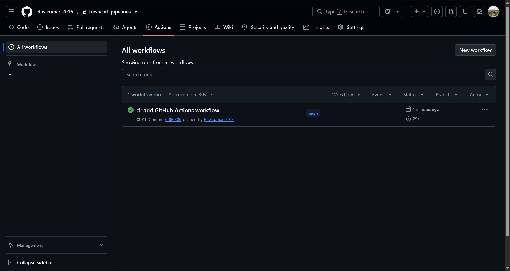
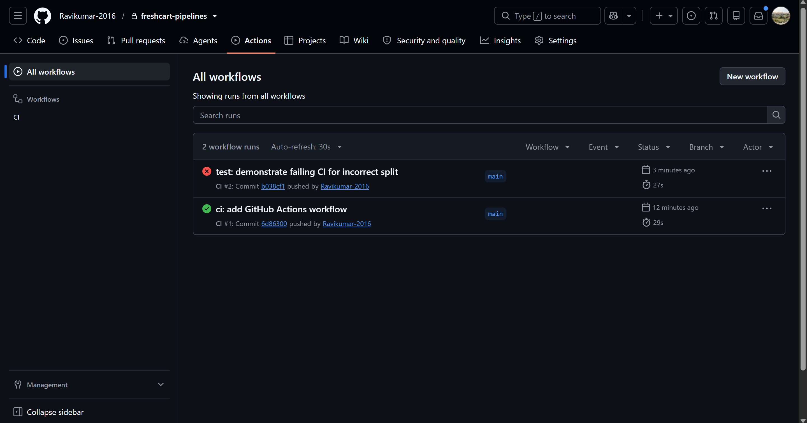
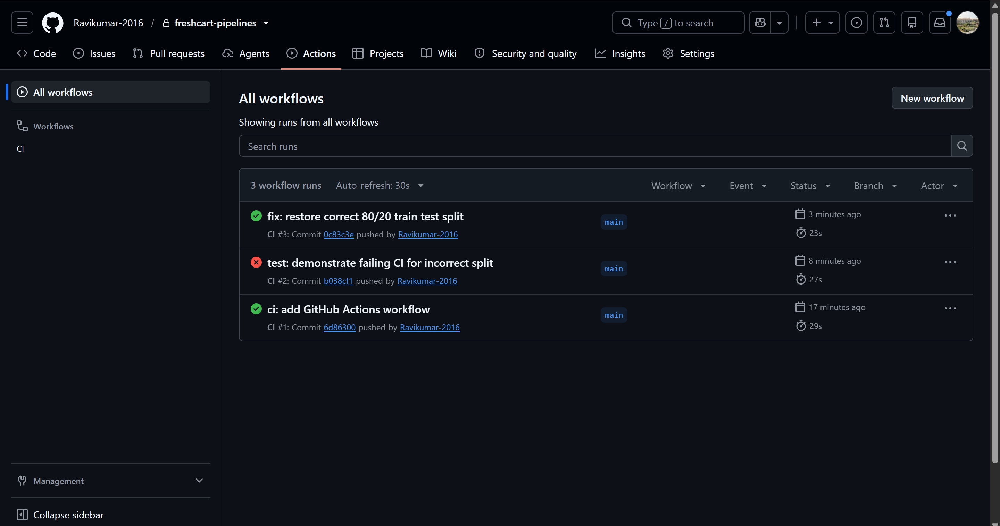
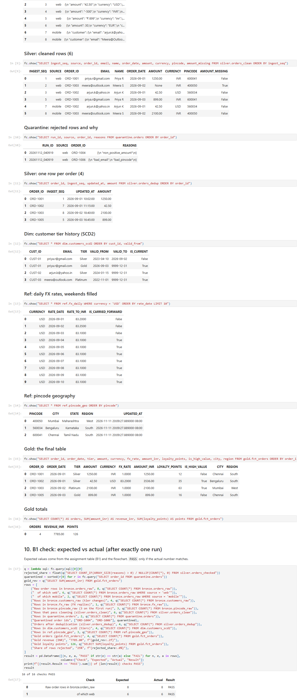
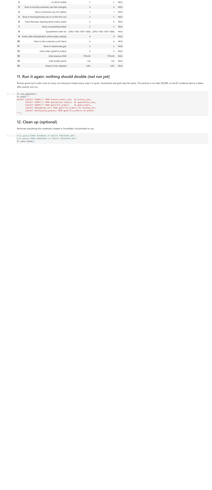
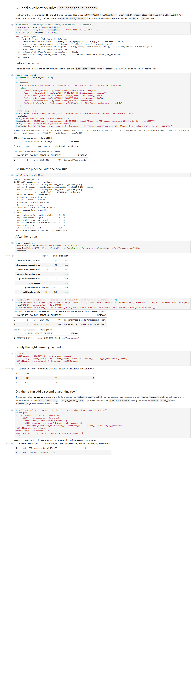
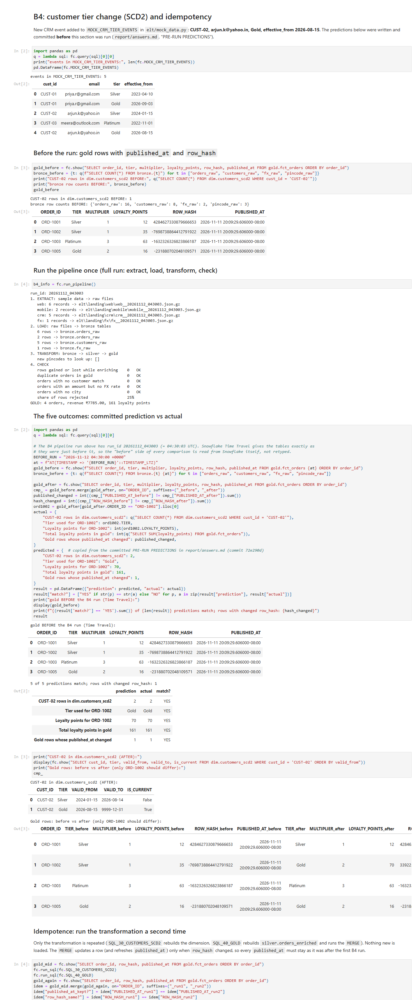
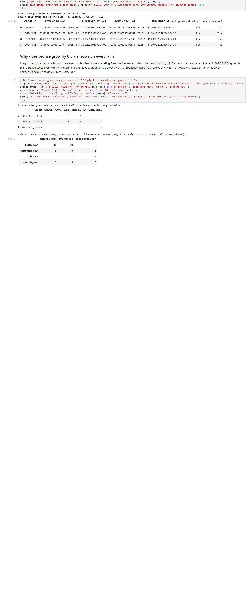
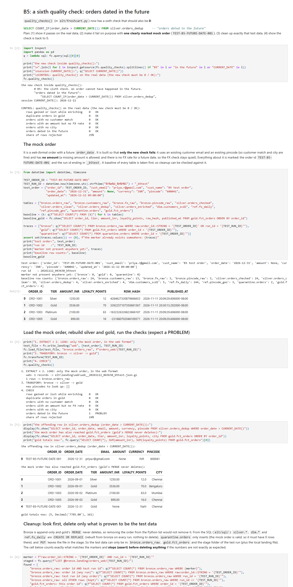
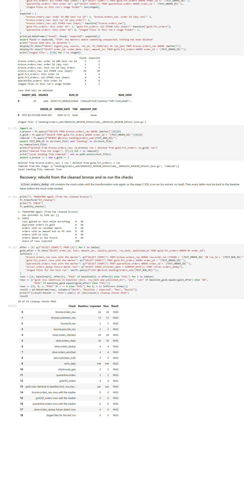
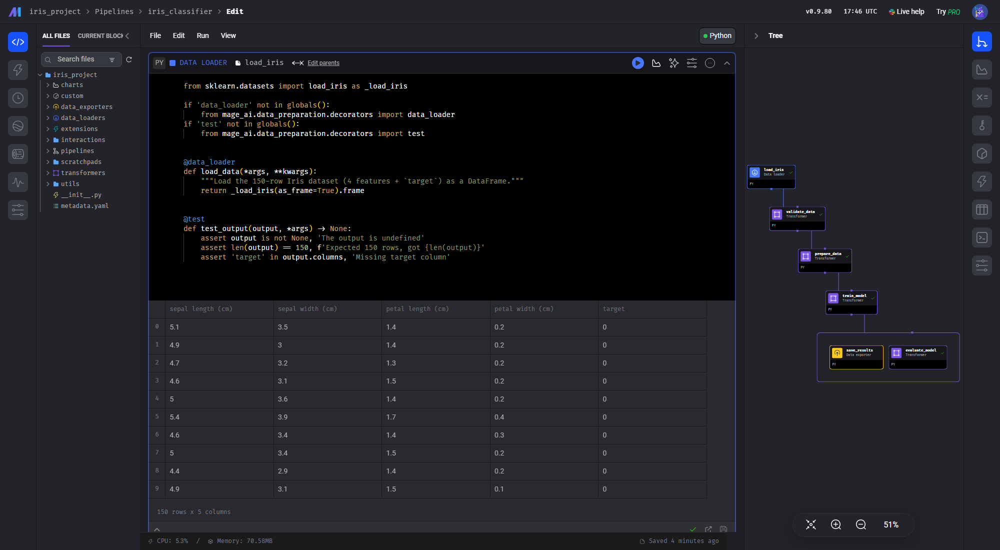